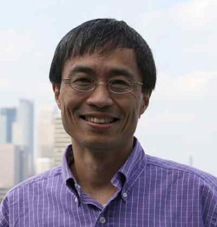

Jiali Gao is a theoretical and computational biochemist, whose work focuses on the structure and properties of macromolecular systems. This includes the understanding of protein dynamics and enzyme catalysis, biomolecular interactions and assembly, and biophysical systems biology, as well as the development of quantum and classical mechanical methodologies. Jiali Gao began his studies as an undergraduate student at Beijing University, and his professional career followed with graduate work at Purdue, postdoctoral research at Harvard, and faculty positions at the State University of New York at Buffalo and the University of Minnesota. He is a recipient of the Diract Medal from WATOC, the Albert Hofmann Centennial Prize and the 2023 ACS Award for Computers in Chemical and Pharmaceutical Research. He is a member of the International Academy of Quantum Molecular Science.